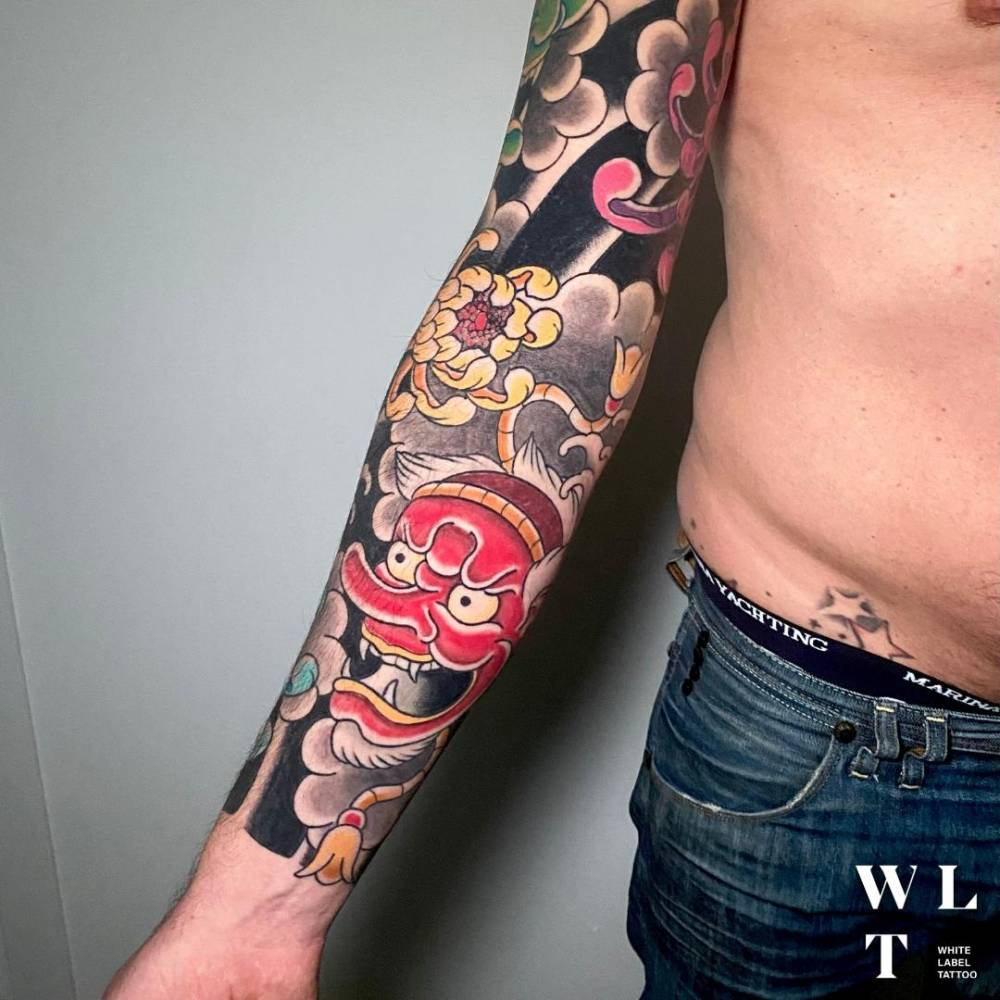
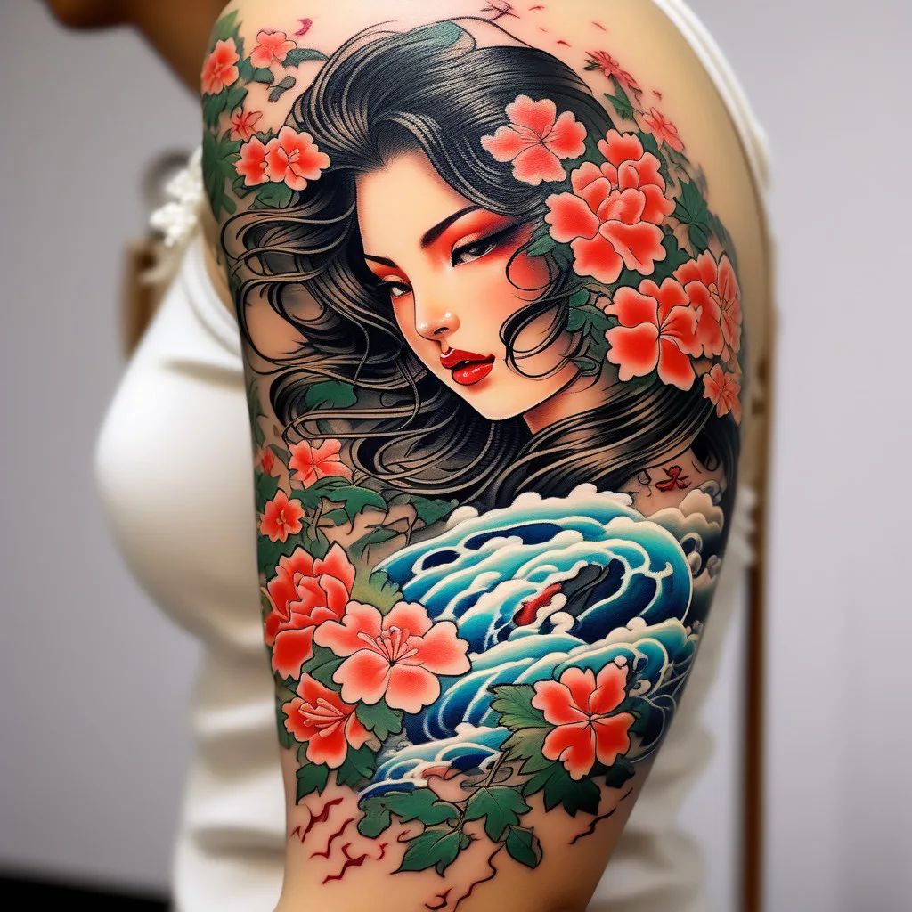
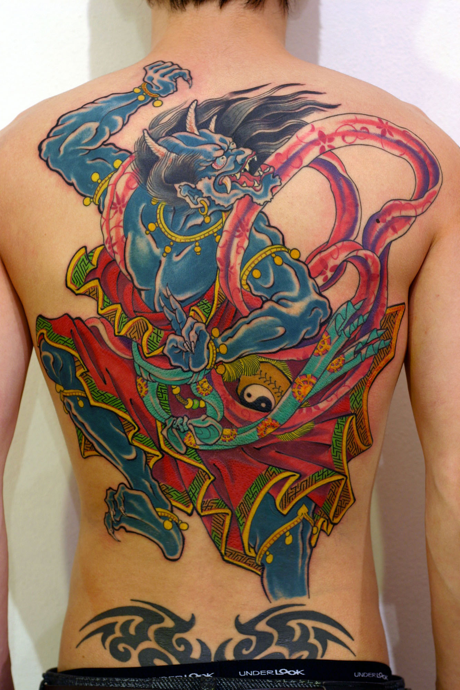
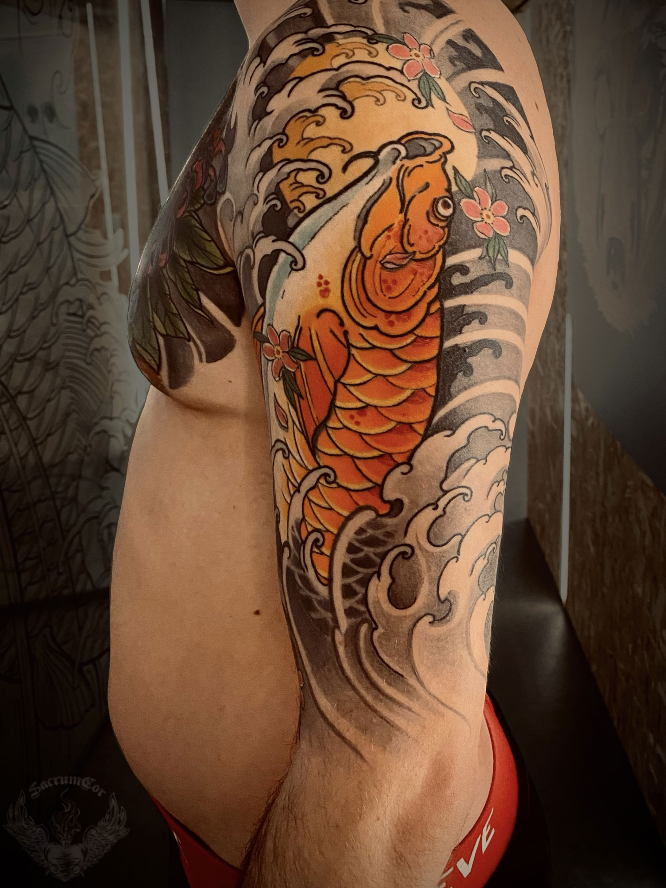
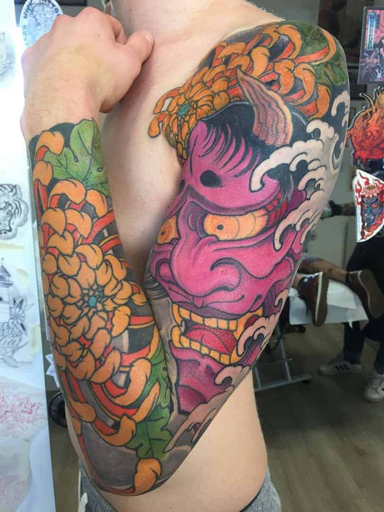
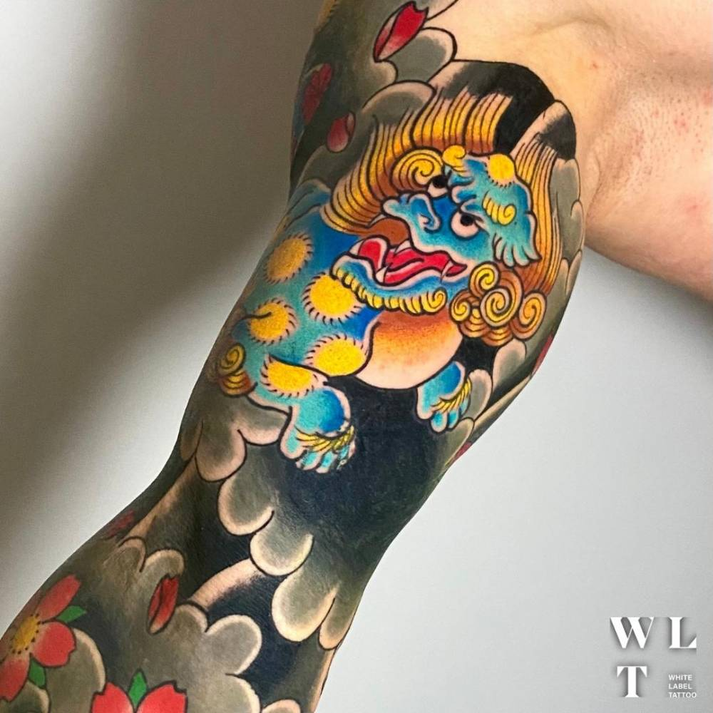
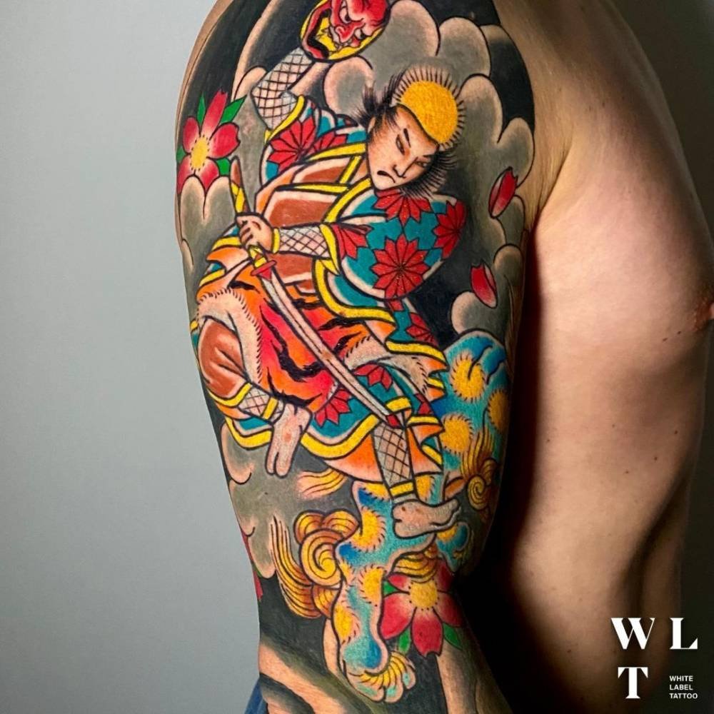
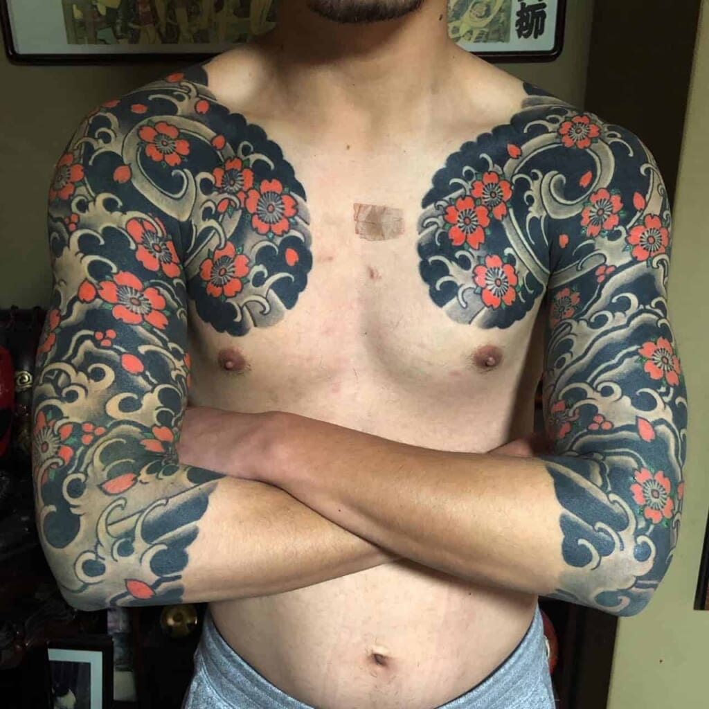

Giapponese
Stile
I tatuaggi giapponesi sono figli della cultura tradizonale nipponica. Che è famosa per la sua continua ricerca della perfezione e della bellezza, e queste caratteristiche si riflettono anche nei suoi tattoo.
Nei tatuaggi giapponesi, infatti, ogni dettaglio e ogni sfumatura sono curati nei minimi particolari, e la scelta e la posizione dei soggetti.
Lo scopo dei tatuaggi giapponesi è sia decorativo che spirituale, e sono questi complessi intrecci di simboli a conferire al tattoo il suo grande valore artistico e sociale
I tatuaggi giapponesi sono chiamati Irezumi, da “ireru” che significa inserire e “sumi” inchiostro, oppure Horimono, da “horu” inscrivere e “mono” qualcosa.
Photogallery







